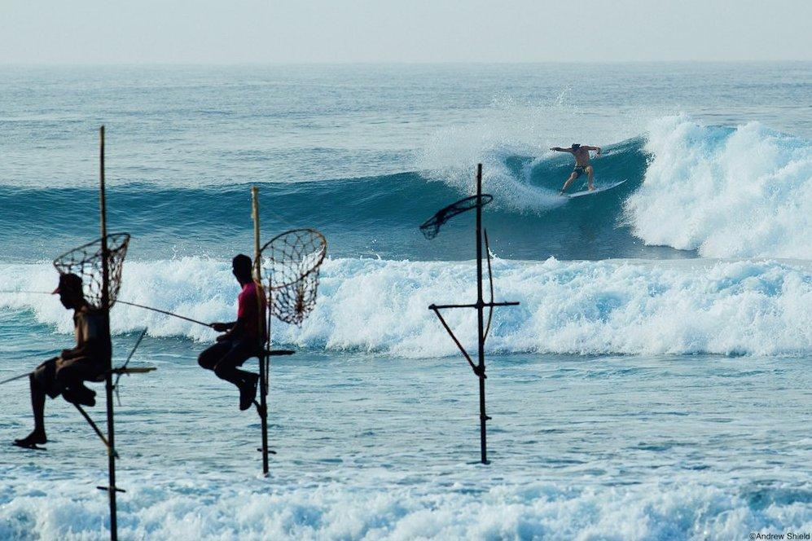
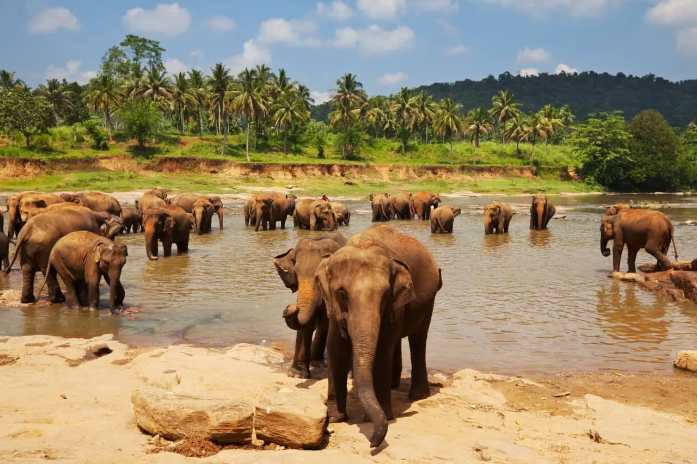
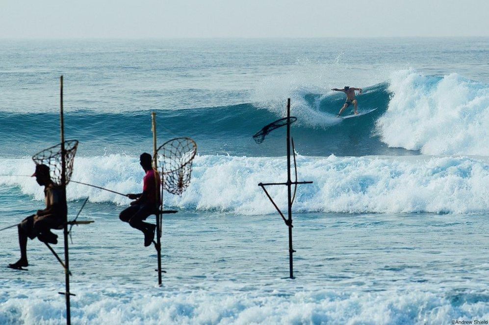
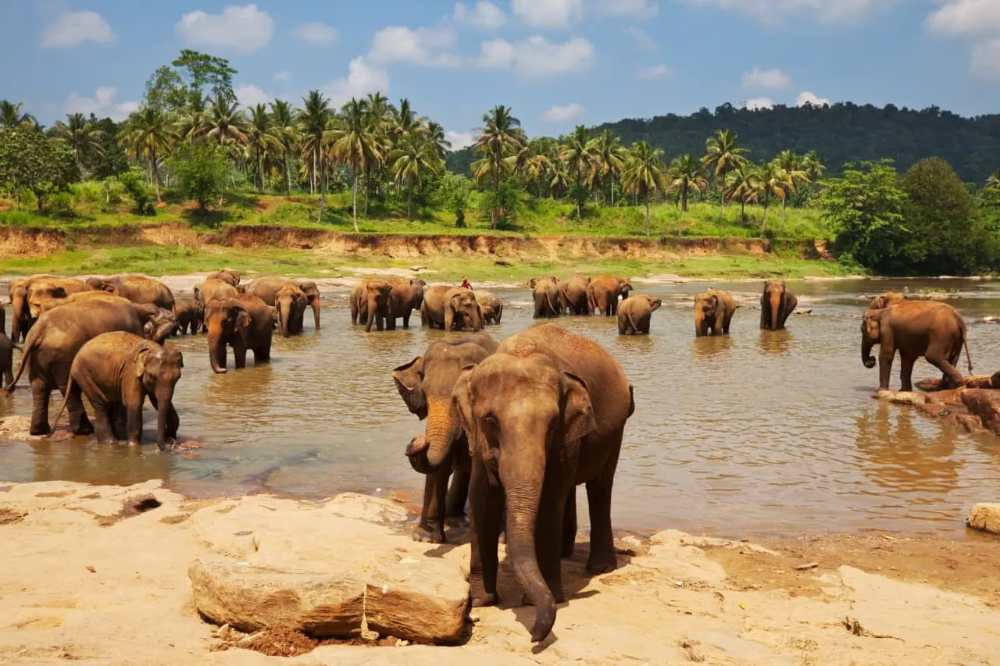

I was born in Kandy, where mornings begin with the smell of cardamom tea and the chant of monks drifting from the hills. My grandparents’ veranda overlooked a mosaic of tiled roofs, and every Poya day we’d walk to the lake, candles reflecting off the water like floating constellations. Even now, when I hear a distant drum, I’m eight years old again — barefoot, sticky with mango juice, certain the world was small and entirely ours.
Seattle arrived as gray skies and endless possibilities. I learned that rain has a hundred textures: the whisper on pine needles at Discovery Park, the metallic hiss on Link Light Rail tracks, the sudden downpour that baptizes Pike Place in neon reflections. High school hallways smelled of wet backpacks and ambition. I discovered coding clubs, Pho broth, and how the word ‘home’ expands to fit new streets.
My future flashes between wards and research labs. I want to be the bridge between data and empathy — to decode genomes by day and reassure parents at night. Medicine, for me, is storytelling with cells: every mutation a plot twist, every recovery a resolution. One day I hope to return to communities like the ones that raised me, carrying microscopes in one hand and fluent compassion in the other.
- Hiking: Where I test my legs and quiet my brain.
- Reading: My portal to histories I never lived and futures I might build.
- Gaming: Interactive philosophy disguised as fun.
 

Click icons, drag windows, enjoy my story.
The beach in Sri Lanka wasn’t just sand and sea; it was the salt‑sweet smell of the Indian Ocean, the crackle of vendors frying isso wade, and the feel of hot sand between my toes as cousins dared each other to race the tide. Every sunset painted the sky mango‑orange, and we’d count fishing boats as their lamps blinked on. In that liminal hour, the horizon felt like a thin veil between home and everywhere else I might go.
Northwest forests are my reset button. My favorite loop is Rattlesnake Ledge: evergreen spires, damp cedar logs, and switchbacks that burn the thighs just enough to quiet the mind. At the summit the lake stretches like polished obsidian, and the city skyline hides behind foothills — a reminder that wilderness and bustle can coexist, just like my two homes.
Games
The Witcher 3: Wild Hunt
Geralt taught me that morality is rarely binary. The war‑torn villages,
the folklore monsters, and the quiet act of choosing kindness in a cruel world
mirrored my own struggle to define right and wrong after moving countries.
A roguelike that redefined failure as progress. Every escape attempt felt like another conversation with my own persistence, and Zagreus’s banter made the Underworld feel oddly like home.

Pure catharsis. Chainsaw revs and demon growls helped me unload exam stress faster than any mindfulness app.
Road trips were rare growing up; Forza let me cruise through digital heather fields, pretending every checkpoint was a new passport stamp.
Born a Crime – Trevor Noah
“We tell people to follow their dreams, but you can only dream of what you can imagine, and, depending on where you come from, your imagination can be quite limited.”
This line echoed my own journey: moving countries expanded the size of possible dreams.
Second Suns – David Oliver Relin
“A single cataract surgery can transform not just one life but an entire family's fortunes.”
It taught me that science is only powerful when it is accessible.
Our first lab was cheek‑cell DNA extraction. Seeing cloudy strands swirl inside a tube felt like witnessing a secret handshake between life and chemistry. From that day, research wasn’t abstract; it was personal.